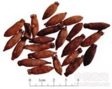

母丁香

拼音
Mǔ Dīnɡ Xiānɡ
别名
鸡舌香（《抱朴子》），亭炅独生（《酉阳杂俎）），雌丁香（《本草蒙筌》）。
来源
为桃金娘科植物丁香的果实。果实将成熟时采收，晒干。
生境分布
无生境分布数据
药材特点
丁香，常绿乔木，高达10米。叶对生；叶柄明显；叶片长方卵形或长方倒卵形，长5-10cm，宽2.5-5cm，先端渐尖或急尖，基部狭窄常下展成柄，全缘。花芳香，成顶生聚伞圆锥花序，花径约6mm；花萼肥厚，绿色后转紫色，长管状，先端4裂，裂片三角形；花冠白色，稍带淡紫，短管伏，4裂；雄蕊多数，花药纵裂；子房下位，与萼管合生，花柱粗厚，柱头不明显。浆果红棕色，长方椭圆形，长1-1.5cm，直径5-8mm，先端宿存萼片。种子长方形。
性状
干燥果实呈卵圆形或椭圆形，长约2～3厘米，直径约0.6～1厘米。外表呈褐色，或带有土红色粉末，粗糙，多细皱纹，上端宿萼有4裂片。质坚脆，破之常纵裂为2瓣，内藏少数种子（因种子来成熟，故多已干瘪，不易察见）。气微香，味辛辣。
性味
辛，温。 ①《别录》："微温。" ②《药性论》："味辛，无毒。"
功能主治
温中，散寒。治暴心气痛，胃寒呕逆，风冷齿痛，牙宣，口臭，妇人阴冷，小儿疝气。 ①《别录》："疗风水毒肿。去恶气，疗霍乱心痛。" ②陶弘景："疗恶核毒肿。’ ③《蜀本草》："疗呕逆甚验。" ④《本耳图经》："疗口臭最良，治气亦效。"
用法用量
内服：煎汤，0.3～1钱；或研末。外用：研末调敷或作栓剂。
化学成分
无化学成分数据
药理作用
1：无药理作用数据
摘录
《中药大辞典》